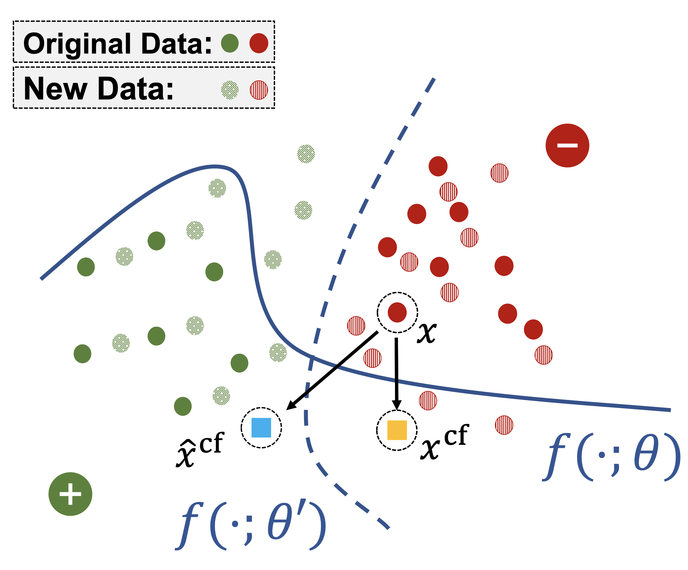
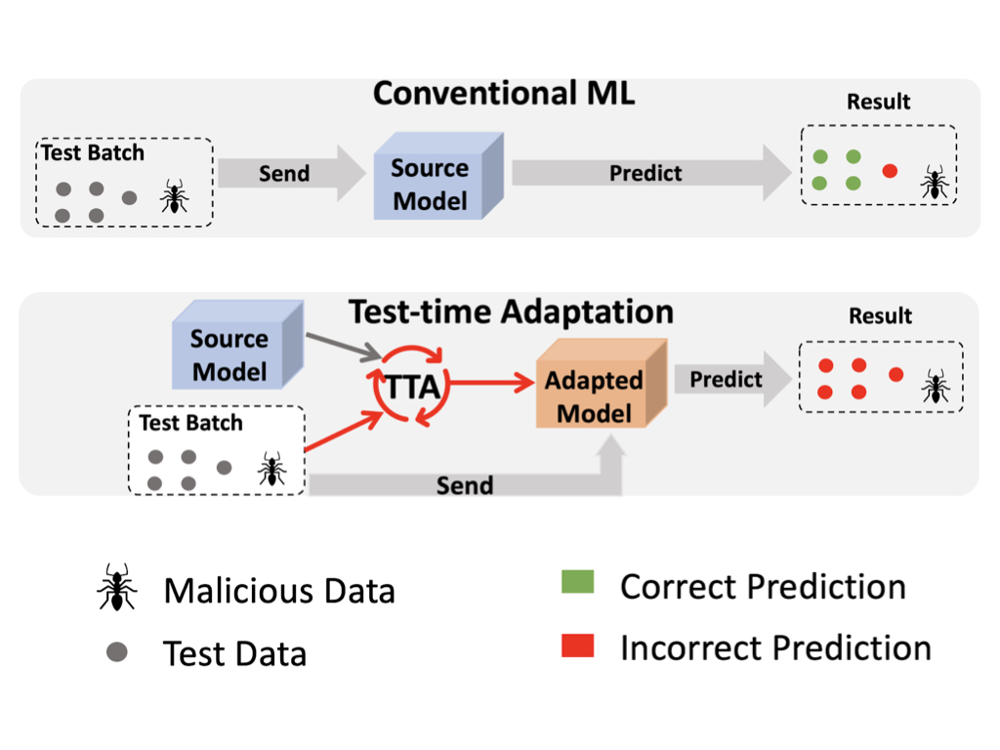
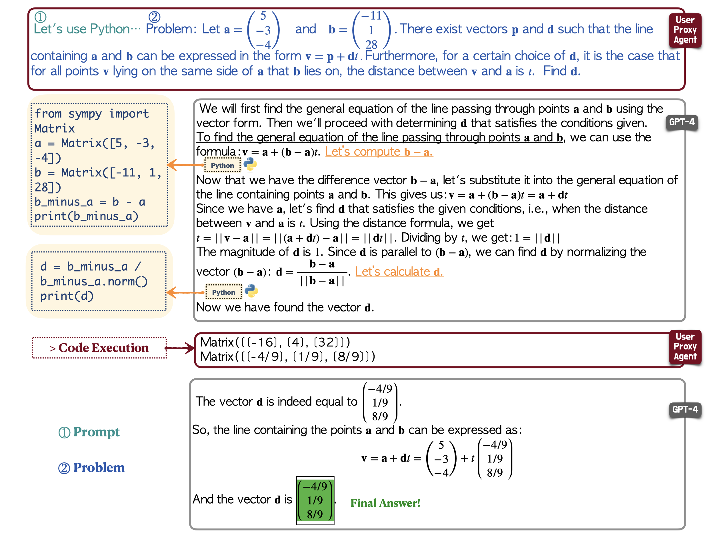
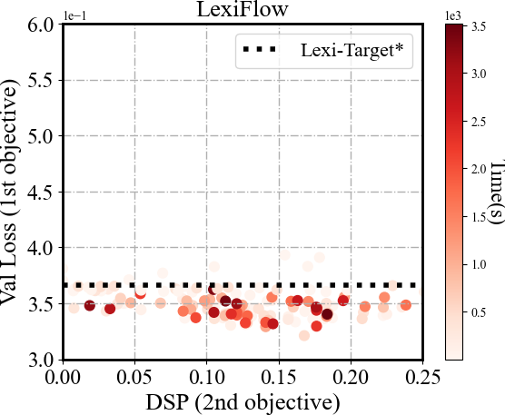
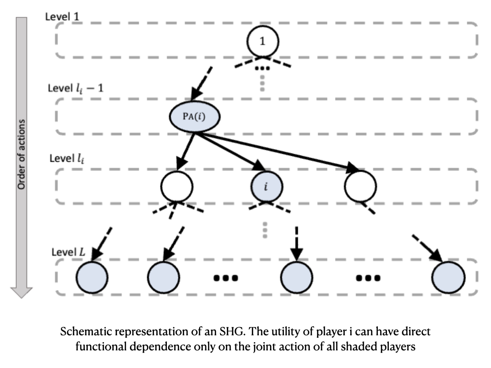
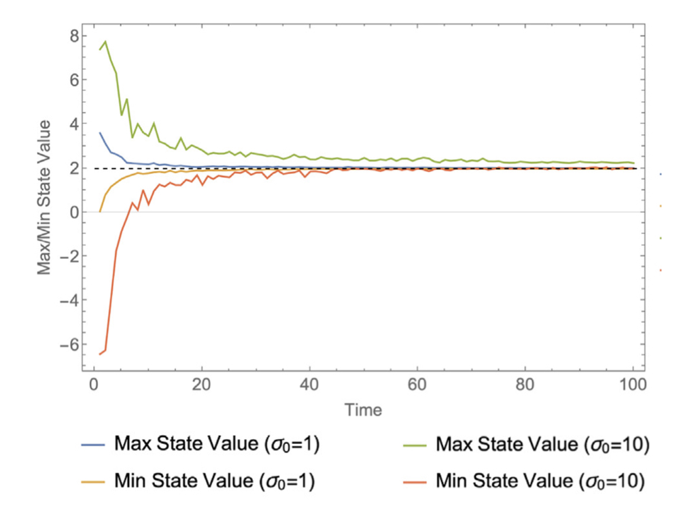
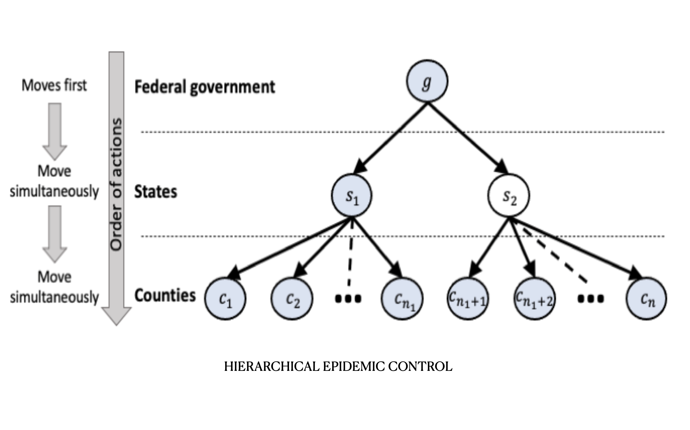
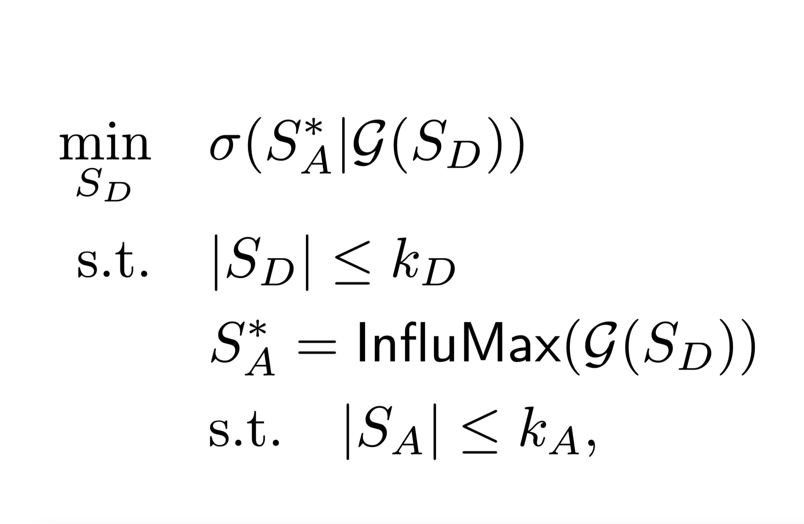

|
Feiran Jia I am a Ph.D. student in Informatics at Pennsylvania State University (PSU), working under the guidance of Prof. Anna Squicciarini and Prof. Qingyun Wu. My research is primarily focused on the Computational Game Theory, Social Network Analysis and Artificial Intelligence, Before coming to PSU, I completed my M.S. in Computer Science at Washington University in St. Louis, where I was advised by Prof. Yevgeniy Vorobeychik and Prof. Chien-Ju Ho. I received my B.S. in Computer Science with a minor in Finance from ShanghaiTech University. Email / CV / Google Scholar / Github |
{kind=link}
ResearchIn Computational Economics, my research applies computational approaches to tackle intricate societal challenges, with a focus on Game Theory, Social Networks, and related Ethical Issues. In the realm of Machine Learning, my work emphasizes efficiency and robustness, exploring areas such as trustworthy machine learning, AutoML, and prompt tuning. |
|

|
RoCourseNet: Distributionally Robust Training of a Prediction Aware Recourse Model
Hangzhi Guo, Feiran Jia, Jinghui Chen, Anna Squicciarini, Amulya Yadav. CIKM 2023 (Oral) project page / paper The paper proposes RoCourseNet, a system that enhances both prediction and explanation capabilities of machine learning models, ensuring their effectiveness despite data shifts. |

|
Content Sharing Design for Social Welfare in Networked Disclosure Game
Feiran Jia, Chenxi Qiu, Sarah Rajtmajer, Anna Squicciarini, UAI 2023 project page / paper The paper introduces a new framework for modeling user decisions in online personal information sharing and proposes welfare-optimizing algorithms. |
|

|
Uncovering Adversarial Risks of Test-Time Adaptation
Tong Wu, Feiran Jia, Xiangyu Qi, Jiachen T. Wang, Vikash Sehwag, Saeed Mahloujifar, Prateek Mittal. ICML 2023 project page / paper The project examines test-time adaptation (TTA) and discovers a security vulnerability where malicious data in the same batch can affect predictions on benign samples, resulting in the development of Distribution Invading Attack (DIA). |
|

|
An Empirical Study on Challenging Math Problem Solving with GPT-4
Yiran Wu, Feiran Jia, Shaokun Zhang, Qingyun Wu, Hangyu Li, Erkang Zhu, Yue Wang, Yin Tat Lee, Richard Peng, Chi Wang. project page / arxiv This research explores using GPT-4 to solve complex math problems, including a newly proposed conversational approach called MathChat. |
|

|
Targeted Hyperparameter Optimization with Lexicographic Preferences Over Multiple Objectives
Shaokun Zhang, Feiran Jia, Chi Wang, Qingyun Wu. project page / paper ICLR 2023 (Oral) The project introduces a novel targeted multi-objective hyperparameter optimization approach with lexicographic preference and presents LexiFlow, a randomized directed search method. |
|

|
Solving Structured Hierarchical Games Using Differential Backward Induction
Zun Li, Feiran Jia, Aditya Mate, Shahin Jabbari, Mithun Chakraborty, Milind Tambe, Yevgeniy Vorobeychik. UAI 2022 (Oral) project page / paper This paper develops Structured Hierarchical Games for modeling hierarchical decision-making and introduces a gradient-based method, Differential Backward Induction, to approximate game equilibria effectively. |
|

|
Consensus in complex networks with noisy agents and peer pressure
Christopher Griffin, Anna Squicciarini, Feiran Jia. Physica A: Statistical Mechanics and its Applications 2022 paper This paper studies how peer-pressure and random noise affect consensus-building in networked systems. |
|

|
A Game-Theoretic Approach for Hierarchical Policy-Making
Feiran Jia, Aditya Mate, Zun Li, Shahin Jabbari, Mithun Chakraborty, Milind Tambe, Michael Wellman, Yevgeniy Vorobeychik. AASG 2021 paper The paper introduces a multi-level game-theoretic model to analyze hierarchical policy-making decisions, specifically in response to crises like COVID-19. |
|

|
Blocking Adversarial Influence in Social Networks
Feiran Jia, Kai Zhou, Charles Kamhoua, Yevgeniy Vorobeychik. GameSec 2020 paper This paper investigates strategies to mitigate the spread of adversarial content on social networks using game theory and optimization techniques. |
|
The website template is from here. |